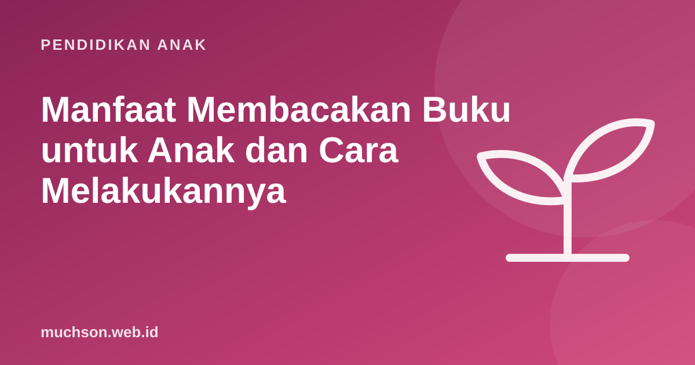

Beranda › Artikel › Pendidikan Anak
Pendidikan AnakManfaat Membacakan Buku untuk Anak dan Cara Melakukannya
Membacakan buku adalah salah satu kegiatan paling sederhana dan paling bermanfaat yang bisa dilakukan orang tua. Tidak butuh biaya besar, tidak butuh keahlian khusus, dan manfaatnya terasa bertahun-tahun. Artikel ini menjelaskan kenapa, lalu memberi teknik agar sesi membaca bersama jauh lebih efektif daripada sekadar membaca teks keras-keras.

Kenapa membacakan buku sangat penting
American Academy of Pediatrics (AAP) dalam pernyataan kebijakannya tahun 2014 menganjurkan dokter anak mendorong orang tua membacakan buku untuk anak sejak bayi. Alasannya: membaca bersama memperkaya kosakata, membangun keterampilan bahasa yang menjadi fondasi membaca, dan memperkuat hubungan orang tua-anak.
| Manfaat | Penjelasan |
|---|---|
| Kosakata lebih kaya | Bahasa buku memuat kata-kata yang jarang muncul di percakapan sehari-hari |
| Fondasi membaca | Anak mengenal bunyi, rima, struktur cerita, dan arah membaca |
| Pemahaman | Anak belajar mengikuti alur, menebak, dan menghubungkan sebab-akibat |
| Kedekatan | Waktu tenang bersama yang menenangkan dan menyenangkan |
| Minat baca | Anak mengasosiasikan buku dengan hal yang hangat dan menyenangkan |
Teruskan membacakan buku walau anak sudah bisa membaca sendiri. Buku yang dibacakan bisa lebih sulit dari kemampuan baca anak, sehingga kosakata dan pemahamannya terus bertambah.
Dialogic reading: membaca sambil bercakap
Grover Whitehurst dan rekan (1988) meneliti teknik dialogic reading, yaitu membaca bersama sambil mengajak anak aktif bercakap. Dalam penelitian mereka, anak yang dibacakan dengan cara ini menunjukkan kemampuan bahasa ekspresif yang lebih baik dibanding kelompok yang dibacakan seperti biasa. Intinya, anak berubah dari pendengar menjadi pencerita.
Urutan PEER
Lima jenis pertanyaan CROWD
| Jenis | Contoh |
|---|---|
| Completion (melengkapi) | "Kancil berlari ke ..." (anak melanjutkan) |
| Recall (mengingat) | "Tadi siapa saja yang membantu kancil?" |
| Open-ended (terbuka) | "Ceritakan apa yang terjadi di gambar ini." |
| Wh- (apa, siapa, kenapa) | "Kenapa buaya marah?" |
| Distancing (menghubungkan) | "Kamu pernah merasa takut seperti kancil?" |
Memilih buku sesuai usia
| Usia | Jenis buku | Tips |
|---|---|---|
| 0-1 tahun | Buku kain atau karton tebal, gambar kontras | Tunjuk dan namai gambar |
| 1-3 tahun | Buku gambar sederhana, rima, dan pengulangan | Biarkan anak membalik halaman dan menunjuk |
| 3-5 tahun | Cerita bergambar dengan alur | Gunakan pertanyaan CROWD |
| 6-8 tahun | Cerita lebih panjang, buku seri, cerita rakyat | Bergantian membaca halaman |
| 9-12 tahun | Novel anak, buku pengetahuan, komik bermutu | Diskusikan tokoh dan pilihan mereka |
Rutinitas 15 menit
Dari mendengar cerita ke membuat cerita
Anak yang sering dibacakan cerita biasanya mulai ingin membuat ceritanya sendiri. Dorong itu: tulis cerita bersama, gambar komik, atau rekam anak bercerita. Bagi anak usia SD, cerita juga bisa dihidupkan dengan coding: tokoh berbicara, berpindah adegan, dan pembaca bisa memilih jalan cerita. Anak bisa mencobanya di pelajaran gratis PixelKode.
Tanya jawab
Sejak usia berapa anak dibacakan buku?
Berapa lama membacakan buku setiap hari?
Apa itu dialogic reading?
Apakah tetap perlu dibacakan setelah anak bisa membaca?
Sumber dan bacaan lanjut
- AAP (2014). Literacy Promotion: An Essential Component of Primary Care Pediatric Practice. Pediatrics
- Whitehurst, G. J. dkk. (1988). Accelerating language development through picture book reading. Developmental Psychology
- Reach Out and Read